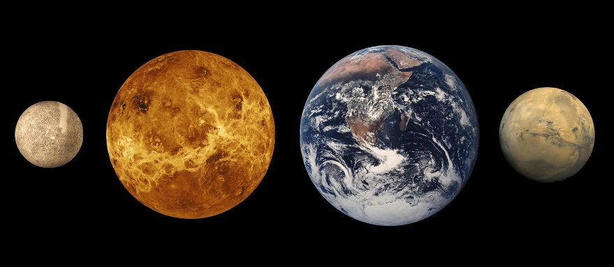
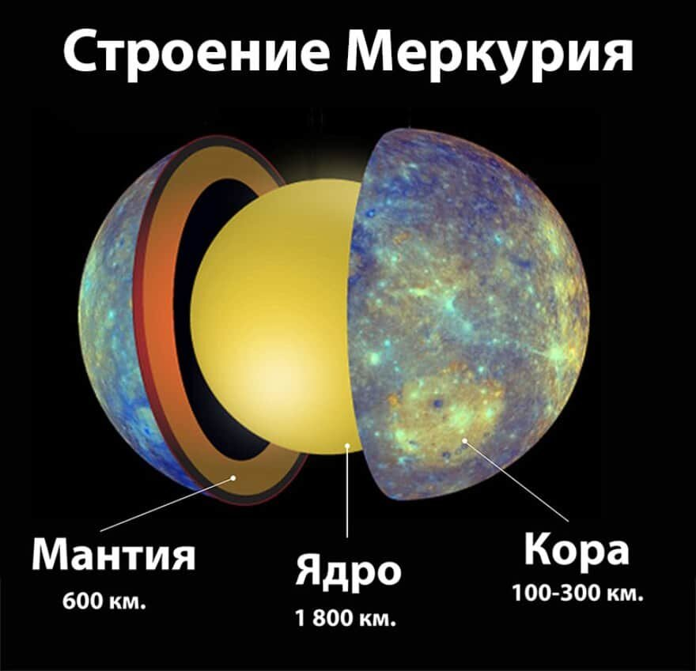
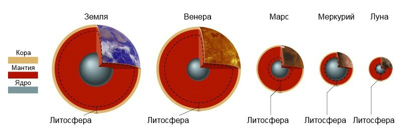
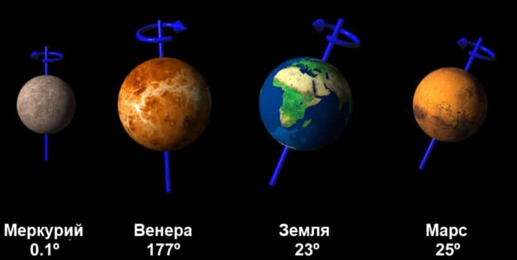
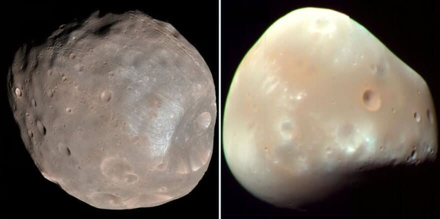
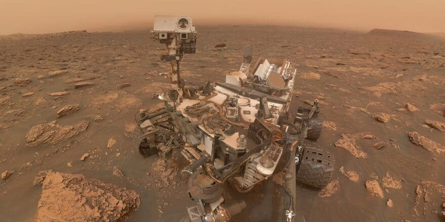

Планеты Земной группы: описание, характеристики, исследование

Исследователи изучают просторы Солнечной системы уже много веков,
отмечая различные планетарные типы. С момента открытия доступа к
экзопланетам наша информационная база стала еще шире. Кроме газовых
гигантов, мы находили и объекты земного типа. Что же это?
Определение
Планета земного типа – небесное тело, представленное
силикатными породами или металлом, и обладает твердым поверхностным
слоем. Это главное отличие от газовых гигантов, наполненных газами.
Термин взят от латинского слова «Terra», что переводится как «Земля».
Ниже представлен список, где указано какие есть планеты земной группы.
Структура и особенности

Внутренняя структура Меркурия представлена корой, мантией и ядром
Все тела наделены схожей структурой: ядро из металла, наполненное
железом и окруженное мантией из силикатов. Их поверхностный шар укрыт
кратерами, вулканами, горами, каньонами и прочими формированиями.
Есть вторичные атмосферы, созданные вулканической активностью или
прибытием комет. Обладают малым количеством спутников или вообще лишены
подобных особенностей. У Земли – Луна, а у Марса – Фобос и Деймос. Не
наделены кольцевыми системами. Давайте посмотрим, как выглядит
характеристика планет земной группы, а также подметим в чем их сходства
и отличия на примере Меркурия, Венеры, Земли и Марса.
Основные факты планет Земной группы
Меркурий - наименьшая планета в системе, достигающая
1/3 земного размера. Наделена тонким атмосферным слоем, из-за чего
постоянно замерзает и накаляется. Характеризуется высокой плотностью с
железом и никелем. Магнитное поле достигает лишь 1% от земного. На
поверхности заметно множество глубоких кратерных шрамов и слабый слой
силикатных частичек. В 2012 году заметили следы органического материала.
Это строительные блоки для жизни, а также нашли водяной лед.

Строение планет Земной группы
Венера по размеру напоминает Землю, но ее атмосфера
слишком плотная и переполнена монооксидом углерода. Из-за этого тепло
удерживается на планете, делая ее самой раскаленной в системе. На
большей части поверхности расположены активные вулканы и глубокие
каньоны. Лишь нескольким аппаратам удалось проникнуть на поверхность и
выжить на короткий временной промежуток. Кратеров мало, потому что
метеоры сгорают
Земля - самая крупная в земном типе и обладает огромным
количеством жидкой воды. Она нужна для жизни, которая развивается во
всех формах. Есть скалистая поверхность, укрытая каньонами и
возвышенностями, а также тяжелое металлическое ядро. В атмосфере
присутствует водяной пар, способствующий смягчению суточного
температурного режима. Есть смена регулярных сезонов. Наибольший нагрев
достается участкам возле экваториальной линии. Но сейчас показатели
растут из-за человеческой деятельности.

Осевой наклон планет земной группы
Марс располагает самой высокой горой в Солнечной
системе. Большая часть поверхности представлена древними отложениями и
кратерными формированиями. Но можно найти и более молодые участки. Есть
полярные шапки, сокращающие свой размер в летний и весенний периоды. По
плотности уступает Земле, а ядро твердое. Исследователи пока не добыли
доказательства жизни, но есть все намеки и условия в прошлом. Планета
обладает водяным льдом, органикой и метаном.
Формирование и общие черты

Фобос и Деймос - вероятные планетозимали
Полагают, что планеты земного типа появились первыми. Изначально пылинки
сливались, создавая большие объекты. Они располагались ближе к Солнцу,
поэтому летучие вещества испарялись. Небесные объекты разрастались до
километрового размера, становясь планетезималями. Затем и они
накапливают все больше пыли.
Анализ показывает, что на раннем этапе развития Солнечной системы могло
присутствовать около сотни протопланет, чьи размеры варьировались между
Луной и Марсом. Они постоянно сталкивались, за счет чего сливались,
выбрасывая мусорные осколки. В итоге, уцелели 4 крупные планеты земной
группы: Меркурий, Венера, Марс и Земля.
Все они отличаются высоким показателем плотности, а состав представлен
силикатами и металлическим железом. Крупнейшим представителем земного
типа выступает Земля. Эти планеты также выделяются общей структурой
строения, включающей ядро, мантию и кору. Лишь у двух планет (Земля и
Марс) есть спутники.
Текущие исследования

Марсоход
Исследователи считают, что планеты земного типа – лучшие кандидаты в
обнаружении жизни. Конечно, выводы основаны на том, что единственная
планета с жизнью – Земля, поэтому ее характеристики и особенности служат
своеобразным эталоном.
Все говорит о том, что жизнь способна выживать в экстремальных условиях.
Поэтому ее ожидают найти даже на Меркурии и Венере, несмотря на их
высокие температуры. Больше всего внимания уделяют Марсу. Это не только
главный кандидат в нахождении жизни, но и потенциальная будущая колония.
Все говорит о том, что жизнь способна выживать в экстремальных условиях.
Поэтому ее ожидают найти даже на Меркурии и Венере, несмотря на их
высокие температуры. Больше всего внимания уделяют Марсу. Это не только
главный кандидат в нахождении жизни, но и потенциальная будущая колония.